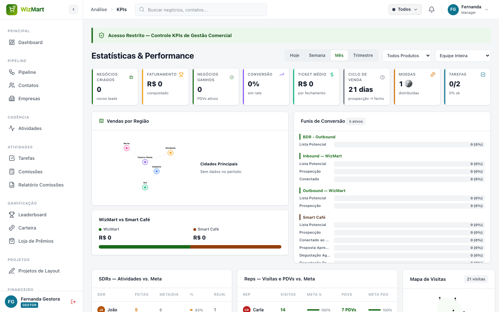
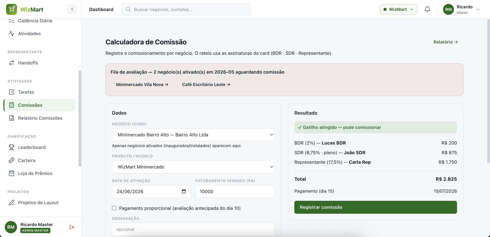
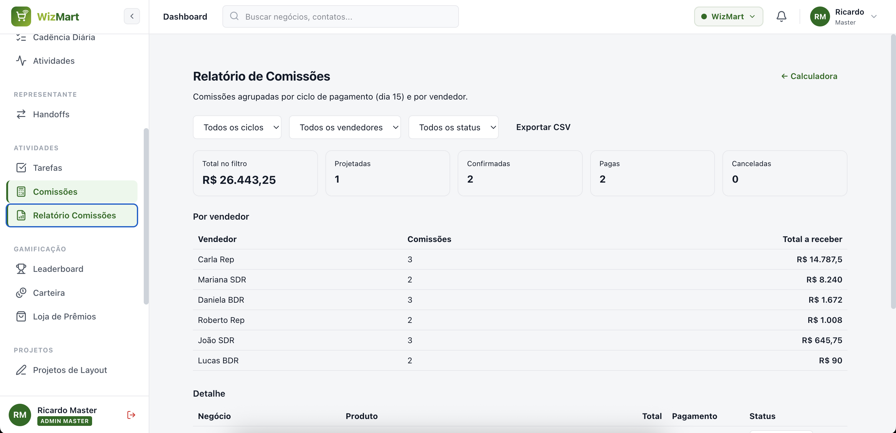

Este guia é para o Gestor Comercial — quem acompanha KPIs, configura a cadência do time, calcula comissões e organiza metas. Leia primeiro o Guia Rápido para login, navegação e gamificação.
Acesse — "Estatísticas & Performance" reúne tudo que você precisa para a reunião de resultados:
Use o filtro de período (Hoje / Semana / Mês / Trimestre) e o filtro de vendedor (exclusivo do Gestor) para ver o desempenho de uma pessoa específica.

Acesse (Configurações → Cadência). Aqui você programa manualmente a régua de contato que o motor automático (7h da manhã, horário de Brasília) usa para distribuir os cards.
Cada dia da régua só pode ter 1 passo, com pelo menos 1 canal selecionado. Editar aqui muda a régua para todos os SDRs a partir da próxima distribuição — não afeta cards já em andamento.
Acesse (Configurações → Templates) para manter o catálogo de mensagens de e-mail e WhatsApp que o time usa direto do card do negócio.
{{contato}}, {{empresa}}, {{vendedor}}, {{negocio}}, {{valor}}, {{produto}}.Uma variável escrita errada (fora do catálogo) aparece em branco na mensagem enviada pelo time — sempre confira no preview antes de salvar.
Acesse para definir faturamento, atividades e visitas esperadas por período, pessoa e produto. As metas aparecem comparadas ao realizado no Painel, nos KPIs e no Painel de TV.
Em você registra o comissionamento de cada negócio ganho. A tela já puxa produto e responsáveis (BDR/SDR/Rep) do card; você só informa o faturamento.

Regras aplicadas automaticamente pelo sistema — conhecê-las ajuda a conferir cada cálculo.
| Papel | Percentual sobre o faturamento |
|---|---|
| BDR | 2% |
| SDR Junior | 7,5% |
| SDR Pleno | 8,75% |
| SDR Senior | 10% |
| Representante Comercial | 17,5% |
| Produto | Gatilho | Observação |
|---|---|---|
| WizMart Minimercado | vender a partir de R$ 3.000 | divisão padrão (BDR + SDR + Rep) |
| Venda Direta · Máquina de Snacks | vender a partir de R$ 2.000 | divisão padrão |
| Venda Direta · Máquina de Café | vender a partir de R$ 1.000 | exige tabela de preços cheia → regra dos 72% |
| Comodato | sem mínimo | exige 1ª fatura paga para liberar |
Quando a Máquina de Café vende a partir de R$ 1.000 com a tabela de preços cheia, paga-se 72% de comissão dos 30 primeiros dias: Representante 49% · SDR 21% · BDR 2%.
No dia 10 avalia-se a venda dos primeiros dias. O sistema projeta a venda de 30 dias: (valor vendido ÷ dias decorridos) × 30. Se a projeção ficar acima do gatilho, paga-se a comissão proporcional ao já vendido.
Exemplo: Minimercado inaugurado em 31/mai vendeu R$ 1.000 em 10 dias → projeção de R$ 3.000 (atinge o gatilho). Paga-se a comissão sobre os R$ 1.000 já vendidos = R$ 270, dividida entre BDR, SDR e Representante.
No comodato não há faturamento mínimo, mas a comissão só é liberada quando o cliente paga a 1ª fatura (confirmado pelo Financeiro). O pagamento é parcelado com teto de R$ 5.000 por parcela.
Exemplo: comissão de R$ 23.000 → 4 parcelas de R$ 5.000 + 1 parcela de R$ 3.000.
As comissões são pagas sempre no dia 15. Todo cliente ativado até o último dia do mês fica elegível para receber no dia 15 do mês seguinte.
Em você acompanha tudo por ciclo de pagamento (dia 15) e por vendedor, muda o status (Projetada → Confirmada → Paga) e exporta em CSV para o financeiro.

Em você vê todas as solicitações de layout de loja feitas pelo time. Como Gestor, você também tem acesso à (a mesma tela do perfil Design) — útil para acompanhar o andamento ou assumir um pedido na ausência de um designer dedicado.
A fila é organizada por ordem de chegada — o pedido mais antigo aparece primeiro. Status: Pendente → Em andamento → Entregue.
| Termo | O que significa |
|---|---|
| Gatilho | Valor mínimo de venda que libera o pagamento da comissão. |
| Régua de cadência | Sequência de dias e canais que define quando cada contato acontece. |
| Ciclo de pagamento | O mês de pagamento das comissões, sempre no dia 15. |
| Comodato | Modelo em que a máquina é cedida; comissão liberada após a 1ª fatura. |
| SLA do Representante | Prazo (em dias úteis) para o primeiro contato após um handoff. |